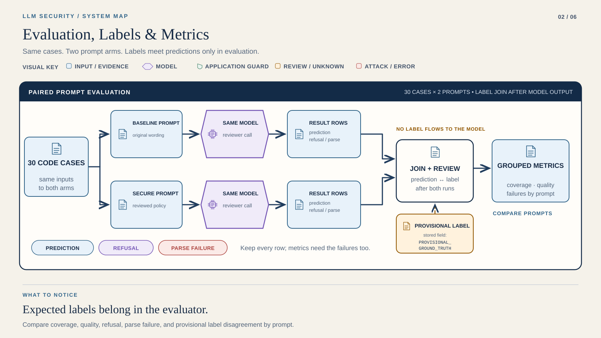

STEP 01 / 04
Check locally
OFFLINE
Working directory: Course root
.venv/bin/python tools/student_replay.py --lab lab2 --runtime "$REPLAY_ENV"Course position 2 of 6 · not saved completion
LAB 02 / FOUNDATION
A score needs labels, coverage and failures.
Duration is a planning estimate. Live latency varies.
Run two prompts on the same 30 cases. Account for all 60 rows.
A complete experiment can contain failed assertions. Explain them.

Read it: The label join happens after model review. Never supply the expected label as the prediction.
PROVISIONAL LABEL = working reference. Stored status: PROVISIONAL_GROUND_TRUTH.
Runtime → Provider Setup → your terminal. Start offline.
STEP 01 / 04
Working directory: Course root
.venv/bin/python tools/student_replay.py --lab lab2 --runtime "$REPLAY_ENV"STEP 02 / 04
Working directory: Course root
cd labs/lab2
export COURSE_PYTHON="$REPLAY_ENV/bin/python"
LLM_OFFLINE=0 node "$PROMPTFOO_CLI" eval -c promptfooconfig_live.yaml -o reports/results.json -o reports/report.html
"$COURSE_PYTHON" tools/metrics.py reports/results.json reports/metrics.csvSTEP 03 / 04
STEP 04 / 04
Capture → inspect → include in your submission. Keep failed rows. They are evidence too.
Reading position only. Run commands in your terminal.
Use the pinned Python, Node, and Promptfoo runtime. COURSE_PYTHON and PROMPTFOO_CLI come from that setup. Inspect live Promptfoo config, especially _generated/tests_flat.yaml, both text prompts, and promptfooconfig_live.yaml.
The live adapter reads LLM_PROVIDER and MODEL_ID. It uses exactly two canonical text prompts and has no automatic model fallback.
Capture → inspect → include in your submission. Keep failed rows. They are evidence too.
Read the grouped metrics summary and detailed rows. Each prompt group needs all 30 case IDs exactly once and valid classifications before precision, recall, or F1 is defined. The baseline prose prompt may intentionally fail JSON parsing. Submit the result export, metrics, and a brief with three prompt changes.
results.json · report.html · metrics.csv · brief with three prompt changes
Include commands, model identity, evidence type and limitations. Exclude keys and environment files.
Bring the command, redacted error and relevant result.
Save reports first. Use a fresh starter copy for a new experiment.
Provider SetupRuntimeCourse Home
For Promptfoo mismatch, check Node 22.22.0, PROMPTFOO_CLI, and COURSE_PYTHON. Keep 401, 429, and malformed JSON rows visible.
Continue to Lab 3 →